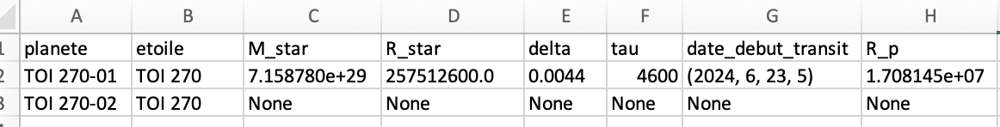
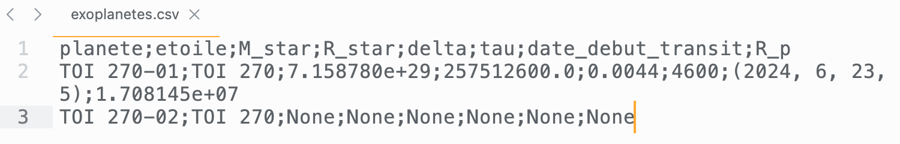
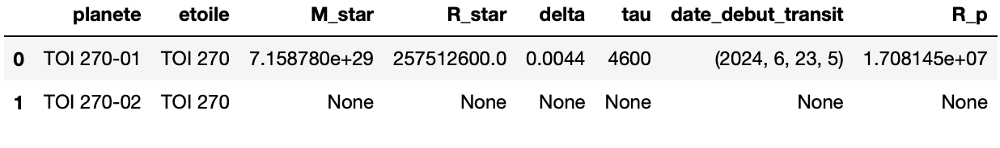

dataframes
Traitement de données d’observation en astrophysique
Importer les données et librairies utiles
Dans une cellule d’un notebook, copier-coller les lignes suivantes:
Planète TOI 270-01
Utilisez le notebook pour placer les valeurs de delta et tau mesurées sur la courbe de transit
Pour la planète TOI 270-01 du système TOI 270, (valeurs à vérifier sur la courbe de transit):
Rayon planete a partir de delta
$$R_p = R_{star}\times \sqrt{delta}$$La racine carrée est une fonction de la librairie numpy, avec numpy.sqrt
Le résultat du calcul peut nécessiter l’écriture d’un format particulier pour faciliter la lecture:
Utilisez le notebook pour calculer le rayon de la planète observée:
Vitesse exoplanète Vp
$$V_p = \tfrac{2 \times R_{star}}{\tau}$$On peut vérifier que l’on obtient:
Rayon orbite planete
$$r = \tfrac{G \times M_star}{V_p^2}$$Periode revolution
$$T = \tfrac{2\pi \times r}{V_p}$$Format numérique:
Une fois que l’on obtient T, en secondes, il peut être utile de représenter cette valeur en jours, heures, min, s:
Faire ces mêmes calculs pour chaque planète observable.
Synthèse des résultats: fichier csv
Les fichiers csv sont interopérables: on peut les editer avec un editeur de texte, ou un tableur. On peut les importer facilement pour un traitement en langage python.
Utiliser un tableur
- Les courbes de transit ont permis de mesurer les valeurs de profondeur de transit $\delta$ et de durée de transit $\tau$.
- Ces valeurs seront reportées dans un fichier csv avec les autres informations sur les planètes et leur étoile. Utiliser un tableur. Attention à bien utiliser des points comme séparateur décimal.

tableau rempli à l'aide d'un tableur
- Exporter (ou enregistrer) en format csv.
On peut vérifier en ouvrant le fichier csv que les données sont mises dans un format particulier (séparation à l’aide d’un point virgule…)

fichier csv
Import dans le notebook python
- L’import avec la librairie pandas se fait de la manière suivante: (rien de plus simple)

Suite
La suite (étape 3) va demander un apprentissage d’une nouvelle structure de données: le dataframe. Cela représente plusieurs avantages:
- la visualisation des données en table dans un notebook python,
- la manipulation des données (creation de nouvelles colonnes calculées, projection, selection, …) qui est similaire au travail déjà vu sur les tables (SQL). Le langage diffère, mais l’esprit est le même.
- L’utilisation des librairies de traitement de données est facilitée (seaborn, …)